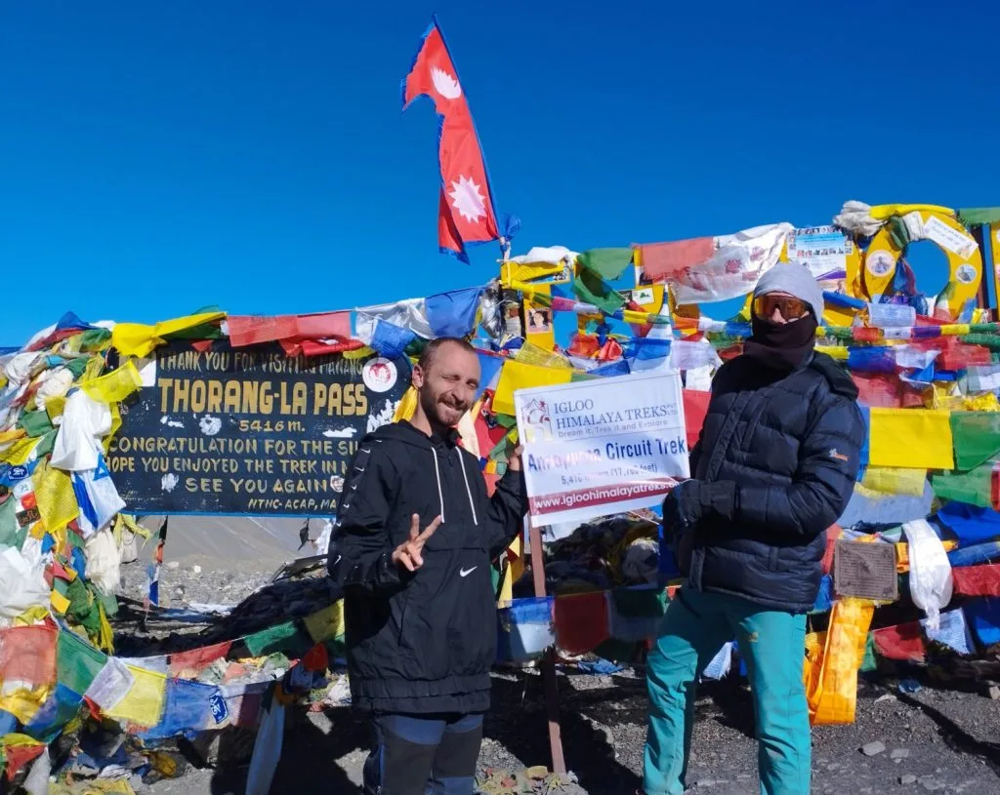
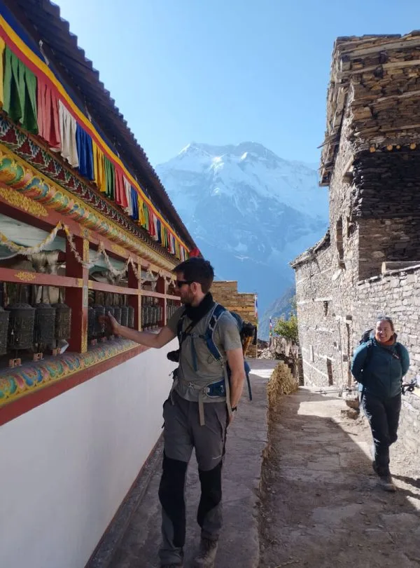
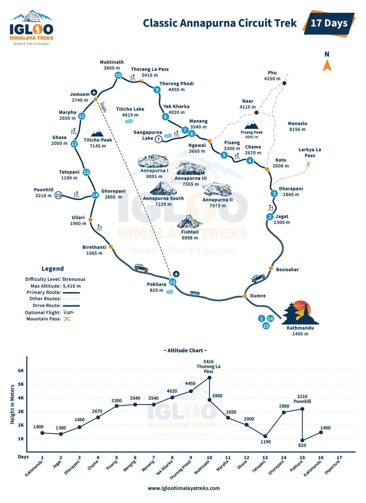
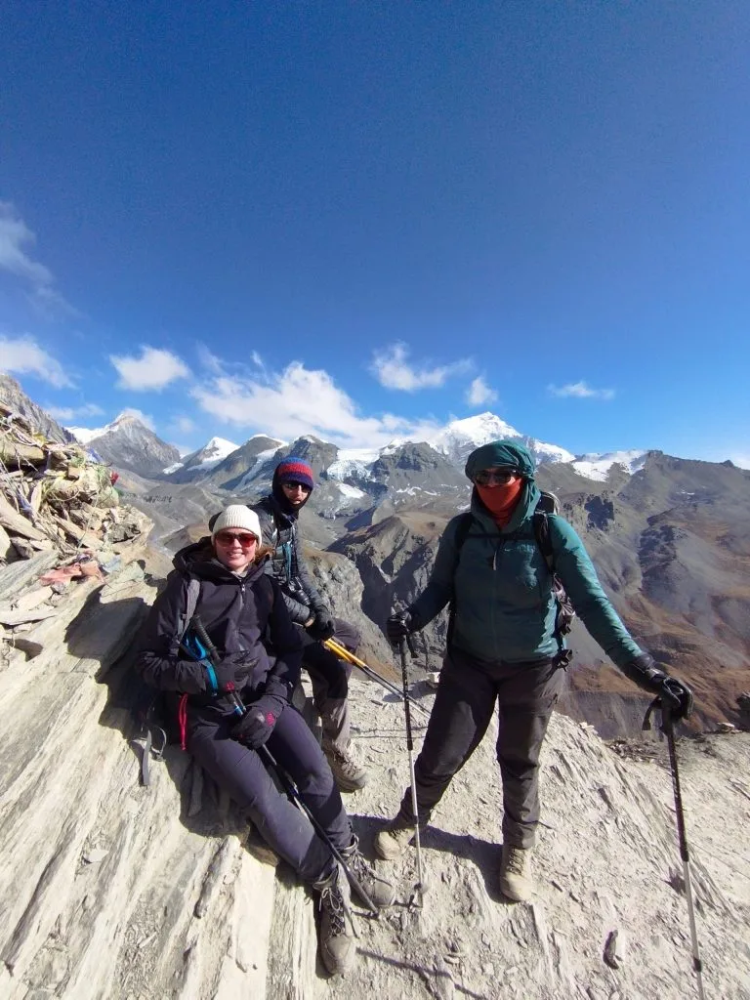
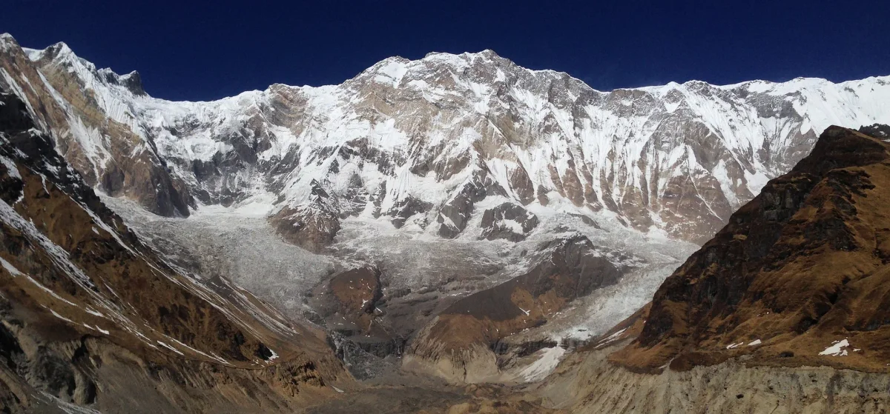
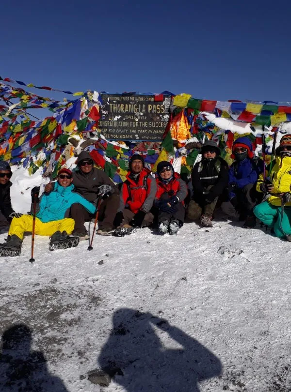

The Roof of the Annapurnas: What is Thorong La Pass?
In the geography of the Nepal Himalaya, mountain passes are sacred gateways. For centuries, Thorong La (also spelled Thorang La) served as a vital high-altitude trading conduit linking the Tibetan Buddhist yak herders and merchants of the Manang Valley with the Thakali and Mustang kingdoms along the Kali Gandaki river corridor.
Today, it represents the physical and psychological apex of the world-famous Annapurna Circuit Trek. At 5,416 meters (17,769 feet), it stands higher than Everest Base Camp (5,364m), Mont Blanc in the Alps (4,809m), and Mount Whitney in California (4,421m). Crossing Thorong La requires traversing from the east side (drained by the Marsyangdi River) to the west side (drained by the Kali Gandaki), crossing a barren alpine tundra landscape of shale, glacial moraine, and seasonal snowfields.
The High-Pass Benchmark: While Thorong La is non-technical—meaning it requires no fixed ropes, ice axes, or technical mountaineering harnesses under normal autumn and spring conditions—it is an extreme high-altitude endurance test. Pacing, acclimatization, and timing are the determinants of success.
Altitude Physiology at 5,416m: 50% Atmospheric Pressure & Hypoxia
Understanding the environmental physics of 5,416 meters explains why even world-class marathon runners struggle on Thorong La without proper acclimatization. Atmospheric pressure at sea level is approximately 1,013 millibars (hPa). At the summit of Thorong La, barometric pressure plummets to roughly 510 hPa—an exact 50% reduction.
While the percentage of oxygen in the air remains 20.9%, the low pressure means that with each breath, your lungs inhale only half the oxygen molecules available at sea level. Your body compensates through hyperventilation, elevated heart rate, and increased pulmonary artery pressure. If your body has not had time to synthesize sufficient hemoglobin and adjust blood pH, this severe hypoxia rapidly triggers Acute Mountain Sickness (AMS), High-Altitude Pulmonary Edema (HAPE), or High-Altitude Cerebral Edema (HACE).
Step-by-Step Route Profile: Yak Kharka to Muktinath
The journey over Thorong La is a multi-day progression that systematically stair-steps your elevation before the final pass push:
| Pass Segment | Starting Alt. | Ending Alt. | Distance | Hiking Time | Terrain & Tactical Advice |
|---|---|---|---|---|---|
| Manang to Yak Kharka | 3,540 m | 4,050 m | 9.5 km | 4.5 - 5 hrs | Gradual ascent through alpine pastures; juniper scrub and yak herds. |
| Yak Kharka to Thorong Phedi | 4,050 m | 4,450 m | 6.5 km | 3.5 - 4.5 hrs | Cross suspension bridge; navigate active scree-fall area before Phedi. |
| Thorong Phedi to High Camp | 4,450 m | 4,880 m | 1.2 km | 1.0 - 1.5 hrs | Steep, rocky zigzag ridge; test of lung capacity and balance. |
| High Camp to Thorong La Summit | 4,880 m | 5,416 m | 4.8 km | 3.0 - 4.0 hrs | Gradual moraine incline, multiple false crests, sub-zero dawn winds. |
| Thorong La Summit to Muktinath | 5,416 m | 3,800 m | 9.2 km | 3.5 - 4.5 hrs | Steep, knee-jarring descent over dry shale, mud, and loose rock. |

The Critical Dilemma: Thorong Phedi (4,450m) vs High Camp (4,880m)
One of the most intensely debated decisions on the Annapurna Circuit is where to spend the night before crossing the pass: Thorong Phedi (the lower base at 4,450m) or Thorong High Camp (perched on a rocky spur at 4,880m).
Both options carry distinct tactical trade-offs:
| Factor | Thorong Phedi (4,450m) | Thorong High Camp (4,880m) | Guiding Team Recommendation |
|---|---|---|---|
| Sleeping Altitude | 4,450 meters | 4,880 meters | Phedi wins: 430m lower sleeping altitude provides much better sleep. |
| Summit Day Walking Time | 7.5 to 9.0 hours total | 6.5 to 7.5 hours total | High Camp wins: Cuts 1 hour of steep uphill off pass morning. |
| Severe AMS Risk | Moderate (~15% headache) | High (~45% severe insomnia/AMS) | Trekkers sleeping at High Camp frequently awake with severe nausea. |
| Teahouse Quality & Warmth | Two large, well-heated lodges | Single basic, drafty stone lodge | Phedi dining rooms are warmer, more spacious, and less crowded. |
| Morning Departure Time | 4:00 AM - 4:30 AM | 5:00 AM - 5:30 AM | Phedi requires an earlier start with headlamps up the zigzag ridge. |
The Expert Guide Recommendation: For 80% of trekkers, Thorong Phedi is the medically superior choice. Gaining restorative sleep, lower resting pulse rates, and better hydration at 4,450m far outweighs the extra hour of climbing on summit morning.
Summit Morning Timeline: The Crucial 4:00 AM Departure Protocol
Success on Thorong La is determined by the clock. A disciplined, precisely timed departure ensures you cross the pass before the arrival of dangerous afternoon weather:
- 03:30 AM — Wake-Up & Fuel: Wake up in your sleeping bag. Change into your summit layers, pack your daypack, and head to the dining room. Force down a hot breakfast of porridge, eggs, and two large cups of black tea or hot ginger lemon honey. Fill your Nalgene bottles with boiling water.
- 04:15 AM — Departure from Thorong Phedi: Switch on your headlamp, strap on your trekking poles, and begin the steep 430-meter climb to High Camp. Move at a slow, meditative cadence—'one breath, one step.'
- 05:30 AM — Reach High Camp (4,880m): Pause briefly to shed or add a layer, sip warm water, and regroup. The sky to the east will begin turning from inky black to deep indigo and violet.
- 06:00 AM to 08:30 AM — The Moraine Climb: Ascend the long, undulating moraine valley. You will encounter several 'false crests' that look like the pass from below. Keep your head down, monitor your breathing, and maintain momentum.
- 08:30 AM to 09:30 AM — Summit Celebration at Thorong La (5,416m): Reach the prayer-flag monument! Drink hot tea from the small seasonal tea hut, take your celebration photos, and soak in the 360-degree panorama of the Dhaulagiri and Mustang ranges. Limit summit time to 20 to 30 minutes to prevent cold shock.
- 10:00 AM to 01:30 PM — The Descent to Muktinath (3,800m): Descend the long, knee-jarring trail to the ancient pilgrimage oasis of Muktinath. Arrive in time for a hot lunch, hot shower, and celebration!

The 10:00 AM Wind Trap & Cyclone Hudhud Weather Lessons
The single greatest environmental hazard on Thorong La is the diurnal thermal wind cycle. To the north lies the arid, high-altitude Tibetan Plateau; to the south lie the deep subtropical valleys of Nepal.
As the sun heats the desert valleys of Mustang around 9:30 AM to 10:00 AM, warm air rises rapidly, creating a massive pressure differential. Cold air from the northern valleys is violently sucked across Thorong La Pass, generating ferocious gale-force winds averaging 50 to 80 km/h (30 to 50 mph). These winds drop wind-chill temperatures to -25°C and blow stinging shale dust and ice crystals directly into hikers' faces.
The Cyclone Hudhud Lesson: In October 2014, unseasonal blizzard conditions triggered by Cyclone Hudhud caused a devastating tragedy on Thorong La when unprepared, unguided trekkers pushed into a blinding blizzard without emergency gear or weather forecasts. Today, ACAP maintains satellite weather monitoring stations, and registered guides strictly enforce turnaround times if blizzards threaten the pass.
Terrain Dynamics: Scree, False Crests, Snowfields & Microspike Rules
The terrain approaching Thorong La is varied and deceptive. Below High Camp, you negotiate steep, loose shale switchbacks where trekking poles provide vital lateral balance. Above High Camp, the trail enters a vast, glacial moraine basin flanked by frozen talus slopes.
During late autumn (November) and spring (March–April), the pass is frequently packed with hard, wind-scoured snow and frozen ice glaze. Attempting to traverse sloping, hard-packed snowfields in smooth-soled hiking boots is exceptionally dangerous. Always carry lightweight trail microspikes in your daypack lid; slipping them over your boots takes 30 seconds and provides rock-solid steel traction across icy traverses.

The 1,600m Quad-Crusher: Surviving the Descent to Muktinath
Many hikers focus 100% of their mental energy on reaching the summit of Thorong La, assuming that once they reach the prayer flags, the hard work is done. This is a dangerous misconception. The descent from Thorong La (5,416m) to Muktinath (3,800m) is a brutal 1,616-meter continuous downward plunge over 9 kilometers.
The upper descent consists of loose scree and dry shale dust where feet easily slide. As you drop lower, the trail transitions into steep, uneven dirt switchbacks. After five hours of uphill climbing in sub-zero air, your quadriceps and calves are exhausted; fatigue causes trekkers to stumble, lean back onto locked knees, or jam toes against boot fronts.
Downhill Survival Technique: Lengthen both trekking poles by 10 cm before leaving the pass summit. Plant your poles firmly ahead of you to absorb 20% to 25% of downward impact. Keep knees slightly bent and take short, rhythmic steps rather than long, jarring strides.
Acclimatization Blueprints: Why Manang (3,540m) Makes or Breaks You
Your ability to conquer Thorong La is determined 48 hours before you reach the pass, during your stay in the historic trading village of Manang (3,540m). Manang is the mandatory physiological staging ground for the entire Annapurna Circuit.
How to spend your acclimatization days in Manang:
- Mandatory 2-Night Stay: Never, under any circumstances, spend only one night in Manang. Your bone marrow requires at least 48 to 72 hours at 3,500m to ramp up erythropoietin (EPO) production and adjust respiratory alkalosis.
- The 'Climb High, Sleep Low' Hike: On your rest day, take a rewarding 4-hour hike to Chongkor Viewpoint (3,900m), Praken Gompa (4,000m), or the emerald glacial lake of Gangapurna. Reaching 4,000 meters for 45 minutes triggers your body's hypoxic adaptation before you descend to sleep comfortably at 3,540m.
- Attend the HRA Altitude Lecture: Visit the Himalayan Rescue Association (HRA) clinic in Manang, where volunteer Western and Nepali high-altitude physicians provide daily medical briefings on AMS, pulse oximeter checks, and cold management.

Technical Pass Gear: Layering for -15°C, Balaclavas & Glacier Glasses
Summit morning on Thorong La demands an uncompromising multi-layer thermal defense against sub-zero temperatures, howling winds, and intense high-altitude ultraviolet radiation:
| Layer System | Recommended Specification | Temperature Rating | Tactical Purpose |
|---|---|---|---|
| Thermal Base Layer | 200-250 g/m² 100% Merino wool | Next-to-skin warmth | Wicks heavy sweat away from skin to prevent freezing during rest stops. |
| Mid-Layer Fleece | Polartec 200 or grid fleece jacket | Insulating core layer | Traps warm body heat while maintaining breathability on steep climbs. |
| Expedition Down Parka | 800+ fill power goose down with hood | Rated to -20°C | Worn from 4:00 AM until sunrise, and during rest breaks at the pass. |
| Outer Storm Shell | 3-layer Gore-Tex Pro waterproof/windproof | Gale-force wind barrier | Deflects biting 80 km/h winds and flying ice crystals across the pass. |
| Hand Protection | Thin liner gloves + heavy down/Primaloft mittens | Sub-zero windchill | Mittens keep fingers clumped together for shared metabolic warmth. |
| Eye Protection | Category 3 or 4 polarized glacier glasses | 100% UV400 protection | Prevents severe snow blindness caused by intense high-altitude reflection. |
Emergency Evacuation Logistics: High Camp Horses, Medevac & Protocols
If a trekker collapses with severe High-Altitude Pulmonary Edema (HAPE) or Cerebral Edema (HACE) at Thorong Phedi or High Camp, every minute counts. Having a verified emergency protocol is vital:
- Emergency Rescue Horses: Local horsemen at Thorong Phedi and High Camp maintain strong mountain ponies. If a trekker suffers exhaustion or mild altitude sickness on pass morning, they can be placed on a horse to cross the pass to Muktinath (NPR 12,000–18,000 / ~$90–$140). Note: If a trekker has severe HAPE/HACE, ascending on a horse is forbidden—they must be immediately evacuated downhill to Manang!
- Helicopter Evacuation: In life-threatening emergencies, charter rescue helicopters can land at designated helipads at Thorong Phedi and High Camp under clear morning skies. Flight time to a hospital in Pokhara is just 20 minutes. Ensure your travel insurance explicitly covers helicopter evacuation up to 6,000 meters.
Teahouse Realities at Phedi and High Camp: Pricing, Food & Water
Accommodations at Thorong Phedi and High Camp represent the most remote, rustic, and extreme outpost living on the entire Annapurna Circuit:
- Thorong Phedi Lodges: Phedi features two expansive lodges (Thorong Base Camp Lodge and New Phedi Lodge) with large communal dining halls, bakeries, and dozens of rooms. Rooms cost NPR 800–1,200 per night.
- Thorong High Camp Lodge: Perched on an exposed ridge, High Camp has a single large stone lodge complex with basic plywood cubicles. Rooms cost NPR 1,000–1,500. Water pipes freeze solid overnight, and bucket water is provided for toilet flushing.
- Dining & Boiled Water: Food prices reflect the immense labor of mule caravans carrying goods to 4,800m. Dal Bhat costs NPR 900–1,100; a liter of boiled drinking water costs NPR 250–350. Order hot ginger lemon tea and boiled water in the evening for your morning bottles.

Permits, TIMS & Why Guided Crossing is a Life-Saving Requirement
Under official regulations from the Nepal Tourism Board, foreign trekkers are strictly required to be accompanied by a government-licensed, registered trekking guide throughout the Annapurna Conservation Area.
On Thorong La Pass, this is not merely a formality—it is a critical safety safeguard. A certified high-altitude guide:
- Monitors your daily blood oxygen saturation and pulse using a fingertip pulse oximeter morning and evening.
- Enforces strict turn-around cutoffs if sudden blizzards or gale-force winds threaten the pass.
- Pre-books limited high-camp teahouse rooms during peak October and April seasons.
- Carries emergency medical kits, satellite communication devices, and coordinates immediate horse or helicopter evacuation if required.
The 10 Golden Rules for Conquering Thorong La Pass
To ensure your crossing of Thorong La Pass is a glorious, safe, and triumphant milestone in your mountaineering life, memorize these ten golden rules:
- Never Skip the Rest Day in Manang (3,540m): Proper acclimatization in Manang is the bedrock of pass success.
- Sleep at Thorong Phedi (4,450m): Lower sleeping elevation guarantees better sleep, hydration, and energy for summit morning.
- Hit the Trail by 4:15 AM: An early start ensures you reach the pass before the ferocious 10:00 AM winds arrive.
- Carry Lightweight Microspikes: Essential for safe footing across hard-packed snow and ice traverses.
- Insulate Your Water Bottles: Wrap your Nalgene bottles in wool socks or thermal jackets so boiling water doesn't freeze into solid ice.
- Keep Batteries Inside Your Sleeping Bag: Sub-zero night temperatures will instantly drain uninsulated camera and phone batteries.
- Wear Polarized Glacier Glasses: Protect your eyes from intense, blinding snow reflection above 5,000 meters.
- Lengthen Your Trekking Poles for the Descent: Save your knee cartilage during the 1,600m downward plunge to Muktinath.
- Eat Hot Dal Bhat and Garlic Soup: Garlic broth naturally thins blood and aids circulation in extreme alpine cold.
- Trek With a Trusted Certified Partner: Partner with Igloo Himalaya Treks. Our veteran Sherpa guides ensure flawless mountain logistics and total high-altitude safety.


Ready to Experience the Himalayas?
Whether you are preparing for high-altitude trekking, cultural circuits, or alpine summit expeditions, start planning a bespoke journey tailored to your fitness, travel season, and style.